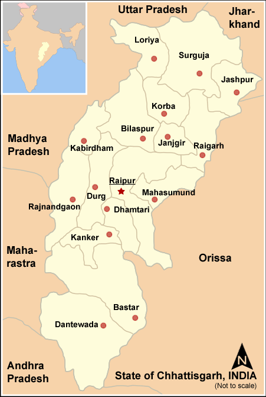

अपनी भाषा में, बिना इंटरनेट के भी — डिजिटल भुगतान धोखाधड़ी से सुरक्षित रहें
संदिग्ध SMS या व्हाट्सऐप मैसेज पेस्ट करें, स्कैम कॉल रिकॉर्डिंग जाँचें, हिन्दी एवं छत्तीसगढ़ी में OTP/UPI/QR सुरक्षा सीखें, और 1930 / cybercrime.gov.in / चक्षु पर सीधे शिकायत दर्ज करें — सब एक ही जगह।
- 100% ऑन-डिवाइस सत्यापन
- शून्य व्यक्तिगत डेटा अपलोड
- सीधे 1930 एवं चक्षु लिंक
वास्तविक डेटा पर निर्मित, डिवाइस पर ही संचालित
पाँच उपकरण, एक ऑफ़लाइन ऐप
मैसेज स्कैम डिटेक्टर
SMS/व्हाट्सऐप टेक्स्ट या लिंक को स्कैम या असली वर्गीकृत करता ML मॉडल — हिन्दी, अंग्रेज़ी व हिंग्लिश, पूर्ण ऑफ़लाइन।
कॉल स्कैम डिटेक्टर
कॉल रिकॉर्डिंग को ट्रांसक्राइब कर फर्जी-KYC, डिजिटल-अरेस्ट या कूरियर-स्कैम स्क्रिप्ट पहचानता है, ट्रिगर वाक्यांशों सहित।
अधिकारियों को शिकायत
1930, cybercrime.gov.in और चक्षु पर एक-टैप पहुँच, साथ ही साक्ष्य चेकलिस्ट।
सुरक्षा पाठ एवं क्विज़
OTP, ATM/UPI पिन व QR सुरक्षा पर संक्षिप्त हिन्दी व छत्तीसगढ़ी पाठ, डिजिटल वित्तीय साक्षरता स्कोर सहित।
स्कैम ट्रेंड डैशबोर्ड
बैंकों व जिला प्रशासन हेतु अनाम, क्षेत्रवार स्कैम-प्रकार ट्रेंड (नीति दृश्य)।
संदिग्ध मैसेज से आधिकारिक कार्रवाई तक — 4 चरणों में
1
पेस्ट करें / रिकॉर्ड करें
SMS/मैसेज टेक्स्ट पेस्ट करें या संदिग्ध कॉल रिकॉर्डिंग चलाएँ।
2
डिवाइस पर विश्लेषण
प्रशिक्षित मॉडल इसे स्थानीय रूप से जाँचता है — कुछ भी आपके फोन से बाहर नहीं जाता।
3
स्पष्ट निर्णय + कारण
स्कैम / संदिग्ध / असली — साथ में वे शब्द जिनसे चेतावनी बनी।
4
एक टैप में शिकायत
साक्ष्य तैयार कर सीधे 1930 / cybercrime.gov.in / चक्षु पर जाएँ।
कोई संदिग्ध मैसेज मिला है या यह जाँचना है कि यह स्कैम है?
मैसेज, लिंक पेस्ट करें, या कोई व्हाट्सऐप टेक्स्ट हमारे डिटेक्टर को भेजें।
मैसेज डिटेक्टर आज़माएँ →स्कैम का शिकार हुए, पैसे गँवाए, या साइबर धोखाधड़ी की रिपोर्ट करनी है?
आधिकारिक पोर्टलों पर शिकायत दर्ज करें एवं सही सहायता पाएँ।
ट्रेंड नमूने में शामिल जिले

पहले ही पैसे गँवा दिए?
तुरंत राष्ट्रीय साइबर अपराध हेल्पलाइन पर कॉल करें या ऑनलाइन शिकायत दर्ज करें।
1930 · cybercrime.gov.in
संदिग्ध कॉल/मैसेज, अभी नुकसान नहीं हुआ?
चक्षु (संचार साथी) पर रिपोर्ट करें ताकि किसी का नुकसान होने से पहले ही उसे रोका जा सके।
समझ नहीं आ रहा क्या करें?
पूर्ण साक्ष्य चेकलिस्ट एवं चरण-दर-चरण शिकायत मार्गदर्शिका देखें।